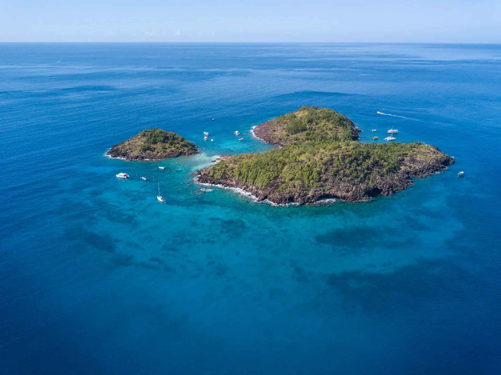

En 1959, le commandant Cousteau tourne autour des îlets Pigeon, deux rochers volcaniques posés à quelques centaines de mètres de la plage de Malendure. Il en fait l'un des sites qu'il place parmi les plus beaux fonds du monde. La zone est aujourd'hui protégée, intégrée au cœur marin du Parc national de la Guadeloupe.
Ce qui rend l'endroit exceptionnel n'est pas seulement la richesse des fonds : c'est leur accessibilité. Les tombants commencent à quelques mètres de profondeur, la mer est protégée des alizés, et la traversée depuis Malendure prend une dizaine de minutes en bateau.

Quatre façons de découvrir la réserve
Le snorkeling depuis la plage
Gratuit, et sans doute la plus belle surprise du séjour. Depuis le bord de Malendure, on nage vers les herbiers où les tortues vertes viennent brouter. Masque et tuba suffisent.
Le meilleur moment est le matin : l'eau est plus claire, les bateaux ne sont pas encore partis et la plage est calme. On garde ses distances, on ne touche pas, on ne coupe jamais la route d'une tortue qui remonte respirer.
Le baptême de plongée
Plusieurs centres opèrent depuis Malendure et encadrent des premières plongées en petits groupes, à faible profondeur, sur des sites abrités. C'est l'un des endroits les plus indulgents des Antilles pour se mettre à l'eau la première fois : pas de courant fort, une visibilité généreuse et de la vie dès trois mètres.
Le bateau à vision sous-marine
La solution pour les enfants, les personnes qui ne nagent pas, ou simplement pour voir les fonds sans se mouiller. Les Nautilus proposent la découverte des îlets Pigeon en bateau à vision sous-marine, au départ de Malendure.
La sortie en mer libre
Louer un bateau sans permis permet de composer sa journée : snorkeling dans les criques, mouillage tranquille, barbecue à bord. Relax Boat 125 propose ce type de formule au départ de Bouillante.
Plus au large, dans le sanctuaire AGOA, on part observer dauphins et baleines — on réserve ces sorties via ICIGO, la plateforme qui regroupe les opérateurs d'excursions de l'île.
Les cétacés sont sauvages : aucune sortie ne peut garantir une observation. Les baleines à bosse transitent principalement entre janvier et mars.
Où plonger
Une dizaine de centres opèrent sur la commune. Voici ceux que je conseille, selon ce que vous cherchez.
Bleu Passion
Une petite structure qui revendique de le rester : deux plongées par jour seulement, une le matin et une l'après-midi, avec des rotations de 2h à 2h30. Là où d'autres enchaînent, ils prennent le temps d'expliquer les exercices et de décrire le site avant la mise à l'eau.
Plongée enfant dès 10 ans, formations certifiées SSI du Basic Diver jusqu'à la certification d'Instructeur professionnel international. Plongées sur épaves.
Chaque lundi et vendredi en haute saison (décembre à mai), sortie matinale avec deux plongées et petit déjeuner à bord entre les plongées. Le reste de l'année (juin à novembre), double plongée matinale avec petit déjeuner à bord, sur deux sites de plongée différents.
Ils sont dans la ZAC de Lostau, à un kilomètre de Malendure — donc encore plus proches de la villa que les centres de la plage, avec un stationnement facile.
Où — ZAC de Lostau, 97125 Bouillante — à 1 km de la plage de Malendure
Ouvert — du lundi au samedi, 9h00 à 18h00. Fermé le dimanche
Contact — par le formulaire de leur site (ils ne prennent ni messages vocaux ni WhatsApp)
Site — bleupassionguadeloupe.com
Les Heures Saines
La référence historique de la Réserve Cousteau, installée sur le Rocher de Malendure, face aux îlets. Plusieurs décennies d'expérience, une grosse structure qui couvre tout : randonnée palmée, baptême, exploration profonde, apnée.
C'est le centre à privilégier pour les plongeurs certifiés qui veulent sortir de la réserve — le Sec Pâté et les épaves de la Côte sous le vent.
Où — Rocher de Malendure, 97125 Bouillante
Site — heures-saines.com
PPK Plongée
Formations SSI, baptêmes enfants au départ de la plage, matériel entièrement à bord — rien à porter. Bateau spacieux et plongées de nuit au programme. Une bonne option familiale.
Où — Plage de Malendure, 97125 Bouillante
Site — ppk-plongee-guadeloupe.com
Centre de Plongée des Îlets
Petite équipe très bien notée, sur la plage côté Pigeon. Accueil chaleureux, encadrement patient des premiers baptêmes — et le planteur offert pour fêter ça.
Où — Plage de Malendure, Pigeon, 97125 Bouillante
Tarifs et horaires à vérifier directement auprès des centres. Aucun d'entre eux ne me rémunère.
Ce qu'on voit sous l'eau
- Tortues vertes — quasi quotidiennes dans les herbiers de Malendure
- Gorgones et éponges barriques — les tombants des îlets en sont couverts
- Poissons-perroquets, sergents-majors, poissons-anges — dès les premiers mètres
- Barracudas et raies — sur les sites plus profonds, côté large
- Le buste de Cousteau — immergé par une quinzaine de mètres de fond entre les deux îlets
Loger tout près
La distance change réellement le séjour quand on plonge. Les départs bateau sont matinaux, le matériel est humide, et l'après-plongée demande du repos. Dormir à cinq minutes de la mise à l'eau évite une heure de route par jour.
Villa CABOUA
Villa récente dans un quartier calme du bourg de Bouillante, à cinq minutes de Malendure et des centres de plongée. Trois chambres climatisées, terrasse couverte, jardin tropical clos, parking privé dans la propriété — pratique pour faire sécher le matériel à l'abri.
Les questions fréquentes
Peut-on voir la réserve sans savoir nager ?
Oui, avec un bateau à vision sous-marine. C'est la formule qui convient aux jeunes enfants et aux personnes non nageuses.
Quelle est la meilleure période pour plonger ?
De décembre à avril, pendant le carême : mer calme, visibilité maximale. Mais la côte sous le vent reste plongeable toute l'année, c'est justement sa particularité.
Est-ce payant d'accéder à la réserve ?
La plage de Malendure et le snorkeling depuis le bord sont libres et gratuits. Seules les sorties encadrées — plongée, bateau, excursion — sont payantes.
Réserver la villa
En direct auprès des propriétaires, sans commission de plateforme.
Voir les disponibilités Écrire sur WhatsApp- Louer à Bouillante — saisons, budget, quartiers
- Les activités en mer — bateau, fonds de verre, cétacés
- Que faire à Bouillante ? — au-delà de la plongée
- Où manger à Bouillante ? — mes trois tables préférées